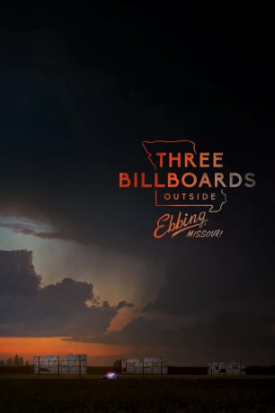

#8407 Three Billboards Outside Ebbing, Missouri
Auszeichnungen: 2 Oscars gewonnen für 5 Oscars nominiert 4 GoldenGlobes gewonnen 5 BAFTA-Awards gewonnen
 gesehen am 19.01.2019
gesehen am 19.01.2019
 
 IMDB-Wertung: 8.2 / 10
IMDB-Wertung: 8.2 / 10  IMDB-TOP-Platzierung: 146
IMDB-TOP-Platzierung: 146  Tomatometer: 90
Tomatometer: 90  Metascore: 88
Metascore: 88 
Die Tochter von Mildred Hayes wurde vor Monaten ganz in der Nähe ihres Zuhauses vergewaltigt und ermordet, aber noch immer tut sich in dem Fall nichts. Von einem Hauptverdächtigen fehlt jedenfalls noch jede Spur und so langsam glaubt Mildred, dass die örtliche Polizei einfach ihre Arbeit nicht richtig macht. Und ganz anders als ihr Sohn Robbie der einfach nur sein Leben weiterleben möchte, kann sie das nicht akzeptieren. Darum lässt sie eines Tages an der Straße, die in ihren Heimatort Ebbing, Missouri führt, drei Werbetafeln mit provokanten Sprüchen aufstellen, die sich an Polizeichef William Willoughby richten. Klar, dass die Situation nicht lange friedlich bleibt. Als sich dann noch Officer Dixon einmischt, ein unreifes und gewalttätiges Muttersöhnchen, eskaliert die Lage.
Jahr: 2017
Dauer: 115 Minuten
FSK: 12
Land: England Studio: 20th Century FoxTonspuren: DTS - ,
Untertitel: Deutsch,
Auflösung: 1080p (1920x808) Größe: 9584 MB
Genre: Drama, Krimi
Regisseur:
Drehbuch: Martin McDonagh
Soundtrack: Carter Burwell
Darsteller:
 Frances McDormand als Mildred
Frances McDormand als Mildred Caleb Landry Jones als Red Welby
Caleb Landry Jones als Red Welby Kerry Condon als Pamela
Kerry Condon als Pamela Sam Rockwell als Dixon
Sam Rockwell als Dixon- Alejandro Barrios als Latino
- Darrell Britt-Gibson als Jerome
 Woody Harrelson als Willoughby
Woody Harrelson als Willoughby Abbie Cornish als Anne
Abbie Cornish als Anne Lucas Hedges als Robbie
Lucas Hedges als Robbie Zeljko Ivanek als Desk Sergeant
Zeljko Ivanek als Desk Sergeant Amanda Warren als Denise
Amanda Warren als Denise- Malaya Rivera Drew als Gabriella
 Sandy Martin als Momma Dixon
Sandy Martin als Momma Dixon Peter Dinklage als James
Peter Dinklage als James Christopher Berry als Tony
Christopher Berry als Tony- Gregory Nassif St. John als Doctor
- Jerry Winsett als Geoffrey
 Kathryn Newton als Angela
Kathryn Newton als Angela John Hawkes als Charlie
John Hawkes als Charlie Samara Weaving als Penelope
Samara Weaving als Penelope Clarke Peters als Abercrombie
Clarke Peters als Abercrombie- William J. Harrison als Boy
 Brendan Sexton III als Crop-Haired Guy
Brendan Sexton III als Crop-Haired Guy- Eleanor T. Threatt als Nurse
- Michael Aaron Milligan als Pal
- Cowboy als Officer Swanson (uncredited)
- Amy Heidt als Lady with a Funny Eye (uncredited)
- Maho Honda als Japanese Woman (uncredited)
- Michael Lee Kimel als Japanese Man (uncredited)
- Mark Salas als Ebbing Police Detective (uncredited)
 Nick Searcy als Father Montgomery (uncredited)
Nick Searcy als Father Montgomery (uncredited)- Wallace Sexton als Paramedic (uncredited)
 Lawrence Turner als Tony (uncredited)
Lawrence Turner als Tony (uncredited)- Jason Redford als Latino #2
- Riya May Atwood als Polly
- Selah Atwood als Jane
- Allyssa Barley als Girl
- Keith Paul Hunter als Officer (uncredited)
- Jason Miller als Gabriella's Cameraman (uncredited)
- Neal Morgan als Townsperson (uncredited)
- Trish Morgan als Police Station Secretary (uncredited)
Datei: X:\2017(N-Z)\Three Billboards Outside Ebbing, Missouri (2017, FSK12, 1920x808).mkv seit 01.03.2018
Festplatte: HD 2017(A-Z)-2018(A-F)
 Es gibt insgesamt 170 Filme in der Gruppe '2017(N-Z)'
Es gibt insgesamt 170 Filme in der Gruppe '2017(N-Z)'